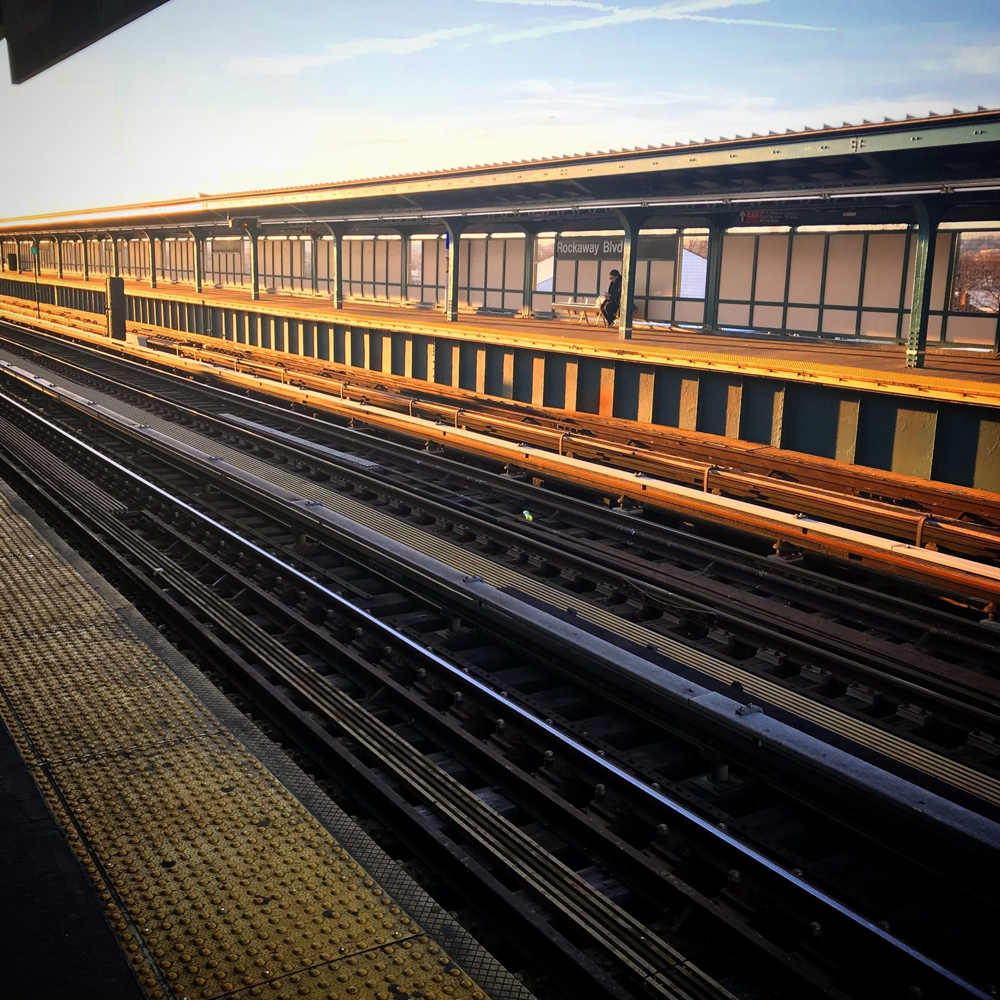

BillyChristmas
I am an Associate Professor at West Virginia University, in the John Chambers College of Business and Economics, affiliated with the Kendrick Center for an Ethical Economy. I teach across Philosophy, Politics, and Economics (PPE) and Business Ethics.
My work engages with the philosophical analysis of political and economic institutions, particularly property rights and state authority. I'm also interested in their connection to urban development and environmental governance. My first book, Property and Justice: A Liberal Theory of Natural Rights, was published with Routledge in 2021.
I am now working on a project that brings the concept of "state capacity" under the lens of political philosophy. My next book, State Capacity Liberalism, is under contract with Oxford University Press.
I have published articles in Philosophy & Public Affairs, The Journal of Politics, Economics & Philosophy, Law & Philosophy, and the Stanford Encyclopedia of Philosophy, et al.
I am a co-principal investigator on a John Templeton Foundation funded research project, "Market Institutions and Green Ideals," in collaboration with the Centre for the Study of Governance and Society at King's College London. Prior to joining WVU I was Senior Lecturer in Political Philosophy at King's College London, in the Department of Political Economy, where I was the PPE Programme Director for four years.
Prior to that, I was a Fellow at the New York University School of Law, in the Classical Liberal Institute, where I remain a Program Affiliate Scholar. I have a BA in Philosophy, an MA in Political Economy, and a PhD in Politics from the Manchester Centre for Political Theory, at the University of Manchester.
I live in Morgantown with my wife and daughter. I enjoy powerlifting, mountain biking, and I am a tonsured Reader in the Orthodox Church. I took the photos on this website in the Hondę Valley (Zimbabwe-Mozambique border), New York City, London, and Brussels, respectively. Except for my headshot which was taken by Alex Flemming in the Harare Botanical Gardens in 2023.

Publications
Teaching
Courses taught, 2015–present
West Virginia University
United States of America
2025–present
Undergraduate
- Ethics and Commercial Society
- How To Be Moral
Graduate
- Institutional Economics
King's College London
United Kingdom
2019–2024
Undergraduate
- Introduction to Political Theory
- Political and Economic Philosophy
- Contemporary Issues in Political Theory
- Freedom and the State
- Marxian Political Economy
- Dissertation Supervision (BA/BSc)
Graduate
- Radical Political Economy
- Liberty, Equality, and Justice: Political Theory and Public Policy
- Dissertation Supervision (MA)
- Thesis Supervision (MPhil/PhD)
Charles University
Czech Republic
2024 visit
Undergraduate
- Philosophy, Politics, and Economics Classics
University of Manchester
United Kingdom
2015–2016
Undergraduate
- Introduction to Political Theory
- Philosophy and Social Science
Property & Justice
A Liberal Theory of Natural Rights, Routledge, 2021
This book gives an account of a full spectrum of property rights and their relationship to individual liberty. It shows that a purely deontological approach to justice can deal with the most complex questions regarding the property system. Moreover, the author considers the economic, ecological, and technological complexities of our real-world property systems. The result is a more conceptually sound account of natural rights and the property system they demand.
If we think that liberty should be at the centre of justice, what does that mean for the property system? Economists and lawyers widely agree that a property system must be composed of many different types of property: the kind of private ownership one has over one's person and immediate possessions, as well as the kinds of common ownership we each have in our local streets, as well as many more. However, theories of property and justice have not given anything approaching an adequate account of the relationship between liberty and any other form of property other than private ownership. It is often thought that a basic commitment to liberty cannot really tell us how to arrange the major complexities of the property system, which diverge from simple private ownership.
Property and Justice demonstrates how philosophical rigour coupled with interdisciplinary engagement enables us to think clearly about how to deal with real-world problems. It will be of interest to political philosophers, political theorists, and legal theorists working on property rights and justice.
Property is arguably the foundational issue in legal and political philosophy. Billy Christmas insightfully illuminates this foundational issue by elaborating a radical liberal - libertarian - theory of property. This provocative book will surely spur controversy and deepen understanding by showing how a libertarian account of property rights can address the perennial concerns of libertarianism's critics while grounding robust safeguards for autonomy and flourishing.
Gary Chartier, Distinguished Professor of Law and Business Ethics, La Sierra University, California
This book is the first serious attempt to combine a right-libertarian theory of individual private property with a solid theory of other forms of property, such as collective, public, and common property. It makes for a much more plausible and humane theory of property.
Karl Widerquist, Professor of Philosophy, Georgetown University-Qatar
Reviews & Discussion
Contact
John Chambers College of Business & Economics
2107 Reynolds Hall, 83 Beechurst Avenue
Morgantown, WV 26505
United States of America